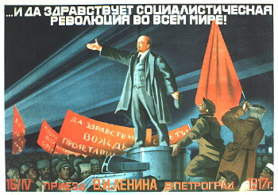

1910-1920
Russia from 1910 to 1920
Significant Historical Events
World War I
Russia took part in World War I allying with France, Britain against Germany and Austria. The war lasted longer than anyone expected and depleted Russia's resources. Although Imperial Russian Government and Tzar Nikolai II believed that a quick victory would revive national unity, the exact opposite happened. There were a large number of mutinies in Russian army. Peasants, workers rebelled in the country and cities protesting the tax policies, and Tsar's expansionist's aims in the war.

To learn more about WW I, Click here
Images of WWI

October Revolution

On October 25th, Bolsheviks took power in Petrograd in a series of desive actions. Provisional Government of Kerenski put up little resistance againts the rebellious groups of workers, sailors and soldiers. After two hours of fighting in Winter Palace, the ministers of the Provisional gov't were arrested. Kerenski managed to escape. Lenin emerged as the leader of the Soviet regime.
Related Links
Explore St Petersburg, in Russian
Vladimir Ilyich Lenin